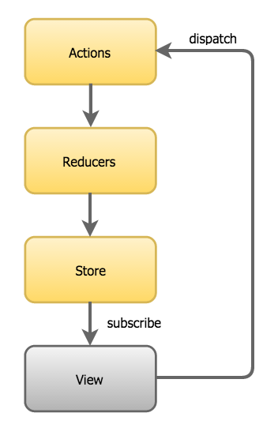

class: center, middle, largeText # Redux predictable state container --- class: largeText # Talk ---- ## Pros and Cons ## Creating Apps ## Consider Redux When --- class: largeText, center, middle # Pros and Cons ---- --- class: largeText # Redux Pros 😊 ---- ## Transparent state ## Track changes (DOM +) ## Import state ## Removes nested prop passing ## Shared state is less complex ## Time Travel --- class: largeText # Redux Cons 😠---- ## Complexity ## Boiler plate ## Team learning ## Time --- class: largeText, center, middle # Pros and Cons ---- ## State Predictability Compairison --- class: largeText # State Predictability Compairison ---- ## In JQuery - Whole App ## In React - Hierarchical ## In Redux - Store --- class: largeText # JQuery (Whole App) ---- <img src="./images/shrug.png" height="100"> ## Where Does State Live? - Anywhere ## Where Is State Modified? - Anywhere ## When Did State Change? - Hard To Know --- class: largeText # React (Hierarchical) ---- ## Where Does State Live? - Mostly Component or Parent ## Where Is State Modified? - Mostly Component or Children ## When Did State Change? - Debug function that changes state --- class: largeText # Redux (Store) ---- <img src="./images/store.png" height="100"> ## Where Does State Live? - Store ## Where Is State Modified? - Reducer ## When Did State Change? - See actions live --- class: largeText, center, middle # Pros and Cons ---- ## Browser Plugin --- class: largeText # React vs Redux Plugin ---- ## Redux - Find State ## React - Find State - See Actions - Time Travel - Load State --- class: largeText # React Plugin ---- <table style="width: 100%;"> <tr> <td> <h2>Finding State and Props</h2> <h3>Difficult to navigate</h3> <h3>Check all Parents</h3> <h3>Better then JQuery</h3> </td> <td style="text-align: right"> <img src="./images/react-plugin.png" height="500"> </td> </tr> </table> --- class: largeText # Redux Plugin ---- <table style="width: 100%;"> <tr> <td> <h2>Finding State</h2> <h3>Difficult to navigate</h3> <h3>Check all Parents</h3> <h3>Better then JQuery</h3> </td> <td style="text-align: right"> <img src="./images/react-plugin.png" height="500"> </td> </tr> </table> --- class: largeText, center, middle # Creating Apps ---- --- class: largeText, center, middle # Creating Apps ---- ## Three Principles ## Plane Redux App ## React/Redux App ## Async --- class: largeText, center, middle # Creating Apps ---- ## Three Principles --- class: largeText # Three Principles ---- <table style="width: 100%"> <tr> <td style="width: 25%"></td> <td style="width: 50%">  </td> <td style="width: 25%"></td> </tr> </table> --- class: largeText # Store ---- <table style="width: 100%"> <tr> <td style="width: 50%"> <h2>Holds applications state</h2> <h2>Immutable but replaceable</h2> <h2>Triggers changes in the view</h2> </td> <td style="width: 50%"> </td> </tr> </table> --- class: largeText # Reducers ---- <table style="width: 100%"> <tr> <td style="width: 50%"> <h2>Use Pure Functions</h2> <h2>Takes In An Action</h2> <h2>Replace State (immutable)</h2> <h2>Only Place That Changes The Store</h2> </td> <td style="width: 50%"> </td> </tr> </table> --- class: largeText # Actions ---- <table style="width: 100%"> <tr> <td style="width: 50%"> <h2>Just an Object</h2> <h2>Represents state change</h2> </td> <td style="width: 50%"> <img src="./images/actions-flow.png"> </td> </tr> </table> --- class: largeText # Dispatch ---- <table style="width: 100%"> <tr> <td style="width: 50%"> <h2>Passes Action to Reducer</h2> <h2>Called by a View</h2> <h2>Called From Async Function</h2> </td> <td style="width: 50%"> </td> </tr> </table> --- class: largeText, center, middle # Creating Apps ---- ## Plane Redux App --- class: largeText # Action ---- ```javascript const action = {type: 'INCREMENT', add: 5} ``` --- class: largeText # Reducer ---- ```javascript function reducer(state, action) { switch(action.type) { case 'INCREMENT': return Object.assign({}, state, { number: (state.number + action.add) }) default: return state } } ``` --- class: largeText # Store ---- ```javascript const { createStore } = require('redux') const store = createStore(reducer, {number: 0}) ``` --- class: largeText # Listen ---- ```javascript function listener () { console.log('checking state', store.getState()) } store.subscribe(listener) ``` --- class: largeText # Dispatch ---- ```javascript store.dispatch(action) store.dispatch(action) ``` --- # Full Redux ---- ```javascript const { createStore } = require('redux') // Action // action = {type: 'INCREMENT', add: 5} // Reducer // function reducer(state, action) { switch(action.type) { case 'INCREMENT': return Object.assign({}, state, { number: (state.number + action.add) }) default: return state } } // Store // const store = createStore(reducer, {number: 0}) // Listener // function listener () { console.log('checking state', store.getState()) } store.subscribe(listener) // Dispatch // store.dispatch(action) store.dispatch(action) ``` --- class: largeText, center, middle # Creating Apps ---- ## React/Redux App --- class: largeText, center, middle # React/Redux App ---- ## Package "react-redux" ## Index.js ## Reducer.js ## Component.js --- class: largeText # Package "react-redux" ---- ## Install "react-redux" ```bash npm install --save react-redux ``` ## API ### createProvider = Create a Provider for component state access ### connect = Hook up component to state --- class: largeText # Index.js ---- ## Imports ```javascript import React from 'react' import ReactDOM from 'react-dom' import {createProvider} from 'react-redux' import { createStore } from 'redux' import Component from './Component' import reducer from './Reducer' ``` --- class: largeText # Index.js ---- ## Provider And Store ```javascript const Provider = createProvider() const store = createStore(reducer, {count: 0}) ``` --- class: largeText # Index.js ---- ## Render App ``` ReactDOM.render( <Provider store={store}> <Component/> </Provider>, window.document.getElementById('app') ) ``` --- class: largeText # Index.js ---- ``` import React from 'react' import ReactDOM from 'react-dom' import {createProvider} from 'react-redux' import { createStore } from 'redux' import Component from './Component' import reducer from './Reducer' const Provider = createProvider() const store = createStore(reducer, {count: 0}) ReactDOM.render( <Provider store={store}> <Component/> </Provider>, window.document.getElementById('app') ) ``` --- class: largeText # Reducer.js ---- ```javascript export default function reducer(state, action) { switch(action.type) { case 'INCREMENT': return Object.assign({}, state, { count: state.count + 1 }) case 'DECREMENT': return Object.assign({}, state, { count: state.count - 1 }) default: return state } } ``` --- class: largeText # Component.js ---- ## Normal Component Parts ``` import React from 'react' import {connect} from 'react-redux' function Component({count, increment, decrement}) { return ( <div> <button onClick={decrement}>-</button> Count {count} <button onClick={increment}>+</button> </div> ) } ``` --- class: largeText # Component.js ---- ## React/Redux Parts ```javascript const mapStateToProps = (state) => ({ count: state.count }) const mapDispatchToProps = (dispatch) => ({ increment: () => dispatch({type: 'INCREMENT'}), decrement: () => dispatch({type: 'DECREMENT'}) }) export default connect(mapStateToProps, mapDispatchToProps)(Component) ``` --- class: largeText # Component.js ---- ``` import React from 'react' import {connect} from 'react-redux' function Component({count, increment, decrement}) { return ( <div> <button onClick={decrement}>-</button> Count {count} <button onClick={increment}>+</button> </div> ) } const mapStateToProps = (state) => ({ count: state.count }) const mapDispatchToProps = (dispatch) => ({ increment: () => dispatch({type: 'INCREMENT'}), decrement: () => dispatch({type: 'DECREMENT'}) }) export default connect(mapStateToProps, mapDispatchToProps)(Component) ``` --- class: largeText, center, middle # Creating Apps ---- ## Async --- class: largeText # Async ---- ## redux-thunk ## redux-saga --- class: largeText # redux-thunk ---- Without redux-thunk you `dispatch` an object ```javascript dispatch({ type: 'ADD', number: 3 }) ``` With redux-thunk you `dispatch` a function ```javascript dispatch((_dispatch) => { _dispatch({ type: 'ADD', number: 3 }) }) ``` --- class: largeText # redux-thunk ---- A function is useful for using async operations Example 1 ```javascript function add3Delayed (dispatch) { setTimeout( () => dispatch({ type: 'ADD', number: 3 }), 3000 ) } ``` Example 2 ```javascript function getTodoItem (dispatch) { fetch('https://jsonplaceholder.typicode.com/todos/1') .then(response => response.json()) .then(json => Object.assign({}, json, { type: 'ADD_TODO' })) .then(action => dispatch(action)) } ``` --- class: largeText # Consider Redux When ---- ## Need "Context" API in React ## State changes for many reasons ## Many components share state